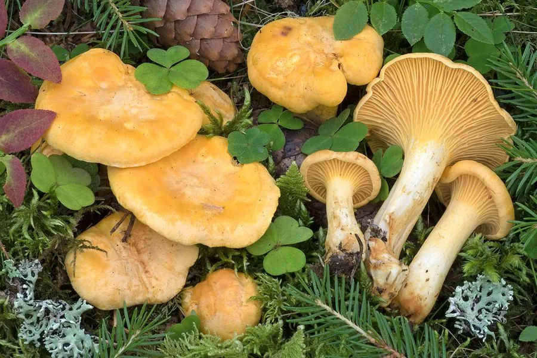

真菌 · 真菌界
鸡油菌 Cantharellus cibarius

通体杏黄色、形似小喇叭的野生食用菌，菌褶呈浅棱状，味道鲜美带杏香，是欧洲和云南常见的著名食用菌。
- 分类
- 门担子菌门纲伞菌纲目鸡油菌目科鸡油菌科属鸡油菌属
- 栖息环境
- 针叶林和阔叶林的地面，与栎树、松树等树木形成外生菌根
- 地理分布
- 欧洲、北美和东亚，中国云南、四川、黑龙江等地有分布
- 保护级别
- 暂无评估（IUCN 未评估，中国未列入重点保护名录）
物种志
鸡油菌是担子菌门鸡油菌目的外生菌根真菌，子实体单生或群生。菌盖呈漏斗形至喇叭形，直径 3–10 cm，表面杏黄色至金黄色，边缘常不规则翻卷；菌盖下方不是真正的菌褶，而是延生的浅棱状皱褶，同样呈黄色；菌柄与菌盖界限不明显，向下渐细；孢子印淡黄色。
鸡油菌与栎树、松树等树木形成外生菌根，多生于针叶林和阔叶林的地面，夏秋季出菇，在欧洲、北美和东亚广泛分布，中国云南、四川、黑龙江等地有出产。它的菌肉坚实、味道鲜美，带有淡淡的杏香，是欧洲和云南常见的著名食用菌，可炒食、炖汤或干制。鸡油菌富含类胡萝卜素，颜色鲜艳；采摘时要与有毒的相似菌类区分，不认识的菌不要采食。
形态与习性
- 菌盖直径 3–10 cm，漏斗形，杏黄色
- 棱褶浅棱状皱褶，延生于菌柄，不是真正的菌褶
- 菌柄与菌盖界限不明显，向下渐细
- 孢子印淡黄色
- 采收期夏秋季，雨后针叶林和阔叶林中出菇
- 食用性可食，味道鲜美并带杏香
- 营养富含类胡萝卜素，颜色鲜艳
趣味知识
- 鸡油菌的菌盖下方不是真正的菌褶，而是延生的浅棱状皱褶。
- 它通体杏黄色，味道鲜美并带有淡淡的杏香。
- 鸡油菌富含类胡萝卜素，颜色鲜艳。
- 采摘时要与有毒的相似菌类区分，不认识的菌不要采食。